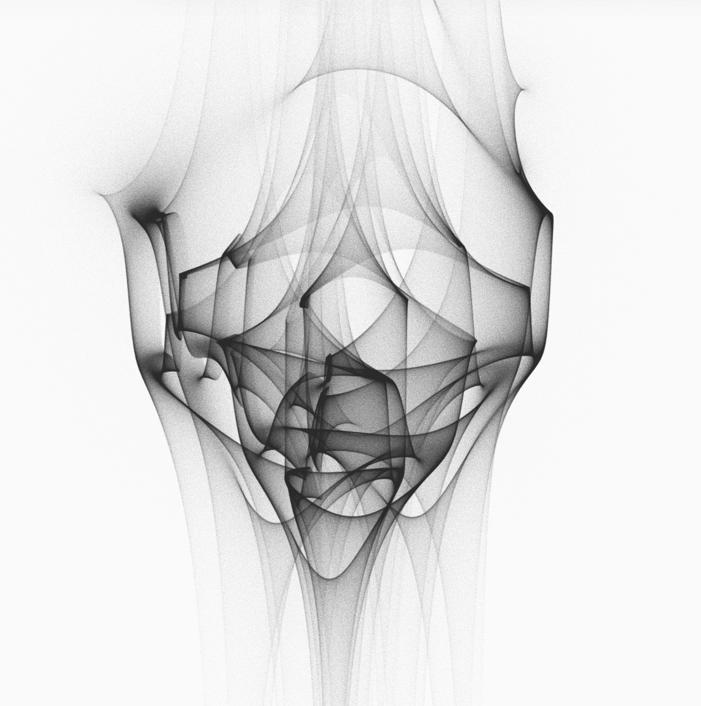

Sewon Myung
I am currently an undergraduate student at Georgia Tech studying mathematics.
My research interests lie in geometry, combinatorics, and their applications in computation.
Outside of mathematics, I am interested in art and design.
Contact: smyung6 [at] gt [dot] edu
Conway Knot is Not a Slice
A reading project based on Lisa Piccirillo’s proof. Focused on knot concordance and slice obstructions.
geometric generative modeling on manifolds
Exploring generative models defined on smooth manifolds. Interested in geometry-aware diffusion models and higher-order structures.
easel: AI Art teacher
An AI-powered art education tool that critiques sketches, helps with perspective, and builds structured learning paths.
algorithmic art
Generative systems inspired by geometry, topology, and architectural minimalism.
For more, check out my github.
My primary medium is oil paint, but I also do digital and algorithmic art.
